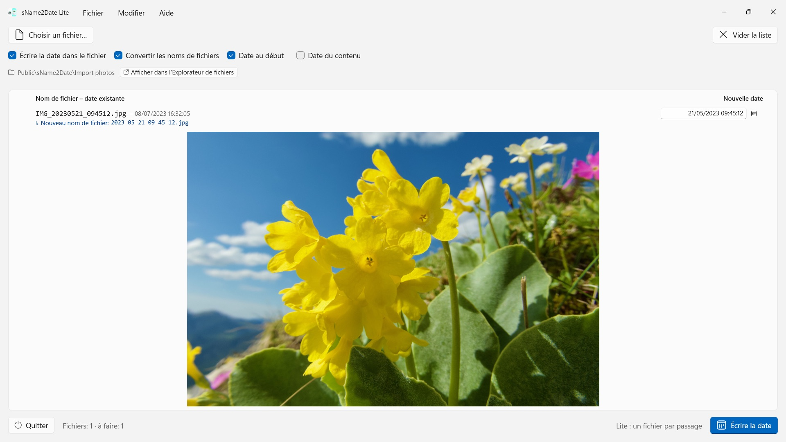
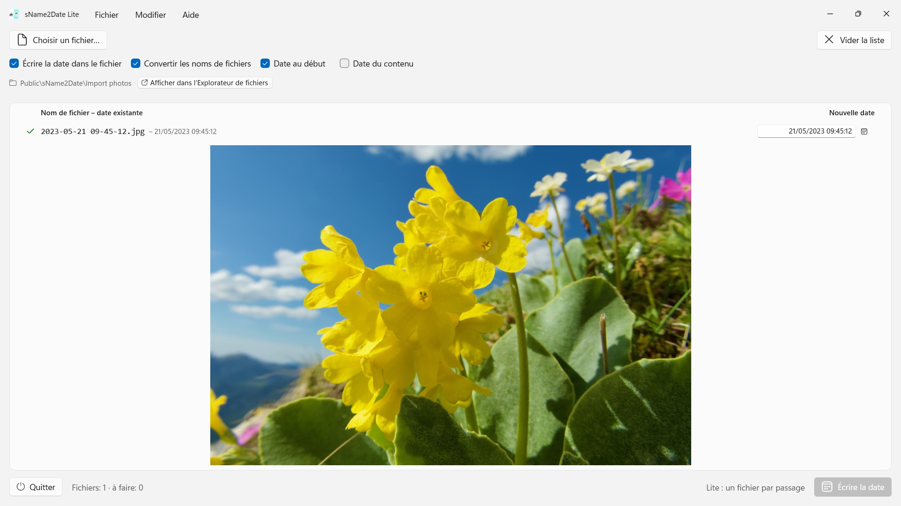

sName2Date Lite
Lit la date dans le nom de fichier — plus d’une douzaine d’écritures, noms de mois dans la langue de l’app et en anglais
Gratuit · Prochainement · Microsoft StoreLit la date dans le nom de fichier et l’écrit comme date de prise de vue dans une photo ou une vidéo — pour que votre photothèque et l’Explorateur de fichiers la classent correctement. Un fichier par passage, gratuit, tout s’annule avec Ctrl+Z.


Beaucoup de photos et de films portent leur date dans le nom de fichier, tout comme des enregistrements audio et des documents tels que les PDF — mais pas là où les programmes la cherchent. Une image reprise d'une messagerie, d'un scanner ou d'une vieille archive donne un fichier comme IMG_20240115_103000.jpg, Vacances 15.01.2024.jpg ou Facture 23112024.pdf, qui apparaît avec la date du jour dans toutes les photothèques et dans l’Explorateur de fichiers.
sName2Date lit la date dans le nom de fichier et l'écrit comme date de prise de vue dans le fichier. S'il n'y en a pas encore, elle est créée. Les PDF et autres fichiers sans date de prise de vue reçoivent les dates de création et de modification. Cette édition prend un fichier par passage — et sait tout faire avec lui.
25 langues : français, allemand, anglais, chinois (simplifié et traditionnel), coréen, croate, espagnol, finnois, hongrois, italien, japonais, néerlandais, norvégien bokmål, persan, polonais, portugais (Brésil et Portugal), roumain, russe, suédois, tchèque, thaï, turc, ukrainien. L’app suit la langue d’affichage de Windows.
ÉCRITURES RECONNUES
Date et heure dans les formes courantes, entre autres :
- 2024-01-15 10-30-00
- IMG_20240115_103000
- IMG-20240115-WA0001
- 2024-01-15 · 2024 01 15 · 2024_01_15
- 15.01.2024 · 15-01-2024 · 15.01.24 · 15012024
- 15 janv. 2024 · 15 mars 2024 · January 15 2024
- 2016 04 · 04-2016 — année et mois seulement
Les noms de mois écrits en toutes lettres sont lus dans la langue de l’app et en anglais, sous leur forme longue comme abrégée.
Si le nom ne porte qu'une date, une heure est supposée ; c'est vous qui décidez laquelle. Si le jour manque également, le premier du mois s'applique — la ligne le précise. Si plusieurs dates figurent dans le nom, la première l'emporte. Et là où le jour et le mois seraient interchangeables, c’est vous qui tranchez — la valeur par défaut vient du format régional de Windows, et les fichiers concernés sont signalés au lieu d'être devinés en silence.
Si le nom ne contient aucune date, vous la saisissez vous-même à droite de la ligne. Cela remonte jusqu'à 1826, l'année de la plus ancienne photographie conservée — une prise de vue numérisée du XIXe siècle se date donc aussi bien que celle d'hier.
CE QUI EST MODIFIÉ
Sont écrits EXIF DateTimeOriginal et DateTimeDigitized ainsi que TIFF DateTime, et pour les films et les enregistrements sonores la date de création inscrite dans le conteneur. Sur demande, également les dates de création et de modification du fichier lui-même.
Les données d'image restent intactes : un JPEG n'est pas recompressé, un film n'est pas réencodé. Pour les films et les enregistrements sonores, l'app ne modifie en règle générale que quelques octets dans le conteneur au lieu de le réécrire — même un film volumineux est ainsi traité en un instant. Après l’écriture, l’app relit la date ; la couleur de la ligne indique où elle est arrivée.
La date de prise de vue est inscrite dans le fichier lui-même pour JPEG, TIFF et HEIC (avec les extensions d’image HEIF de Microsoft), pour les formats vidéo MP4, MOV et M4V et pour les formats audio M4A et M4B. PNG, GIF, WebP, AVI et les photos RAW reçoivent à côté un fichier annexe XMP, que lisent de nombreux logiciels photo — la ligne l’indique par une coche bleue.
MÊME LES FICHIERS QUI NE PEUVENT PAS PORTER DE DATE DE PRISE DE VUE
Un PDF, un fichier texte, un tableur n'a aucun champ pour une date de prise de vue — et figure malgré tout dans la liste. L'app y inscrit les dates de création et de modification du fichier, le seul endroit où l'indication puisse aboutir ; la ligne le signale par une coche orange au lieu d'une coche verte.
Si le fichier ne doit pas être touché du tout, vous décochez en haut de la fenêtre la case « Écrire la date dans le fichier » ; l'app convertit alors seulement le nom.
LE NOM AVEC
Sur demande, l'app met aussi le nom du fichier à l'écriture ISO dans le même passage : Vacances 15.01.2024.jpg devient 2024-01-15 12-00-00 Vacances.jpg. Le nom et la date de prise de vue disent alors la même chose.
TOUT PEUT ÊTRE ANNULÉ
Un passage complet s’annule avec Ctrl+Z — date de prise de vue, horodatages du fichier et nom de fichier modifié. Ctrl+Y le rétablit.
PLUS À LA FOIS : LA VERSION COMPLÈTE sName2Date
La version complète sName2Date prend un dossier entier au lieu d'un seul fichier : elle le lit, au besoin avec tous ses sous-dossiers, affiche pour chaque fichier la date trouvée et écrit tout le lot en un seul passage — même un millier de photos d'un voyage. Sur demande, elle ignore les fichiers qui portent déjà une date de prise de vue.
Pour un fichier isolé, cette édition-ci suffit.
SUR VOTRE PC, ET NULLE PART AILLEURS
Aucun compte, aucun cloud, aucune analyse, aucune publicité. L’app n’accède qu’aux fichiers que vous lui donnez. Chaque langue avec son aide complète.
- Nécessite Windows 11 ou version ultérieure
- 24 langues
- Assistance : SwiftAppsBavaria@gmx.net
- Politique de confidentialité de sName2Date